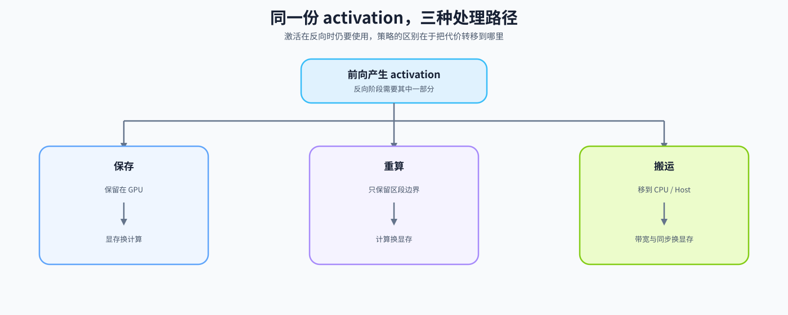
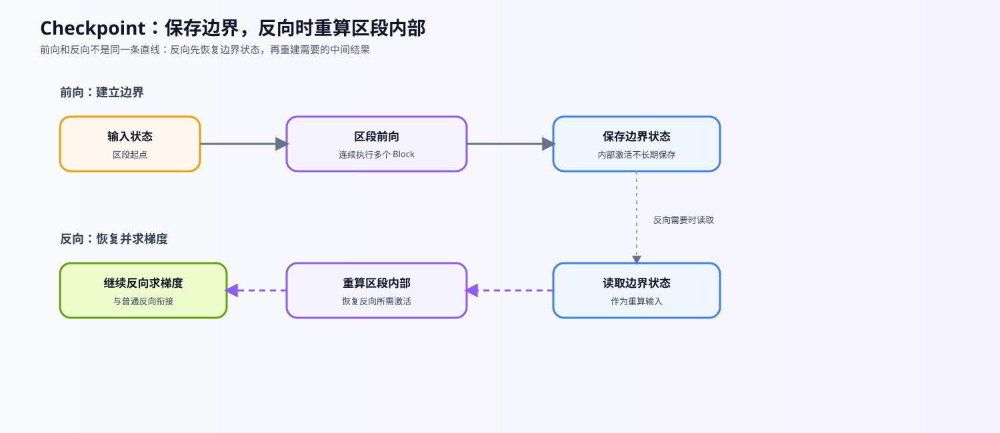

19. Activation Checkpointing | 激活检查点
难度： Hard | 环境： GPU-optional
标签： 显存优化, 激活值, Checkpointing | 目标人群： 显存优化学习者
本节导读
训练大模型时，参数只是显存账本的一部分；随着训练规模和上下文长度变化，计算过程中产生的中间状态也会形成资源压力。本节围绕这类训练状态建立观察口径，帮助你把显存占用、计算时间和传输代价放在同一个问题中理解。
学习完成后，你应该能够判断训练显存压力出现在哪个阶段，说明资源代价发生了什么转移，并为后续实验提出可比较的观察指标。相关实现和真实 workload 测量放在后续实验步骤中展开。
关键词： checkpointing, recompute
展开官方原理、图解与任务要求
前置阅读
导语： 先看训练闭环、反向传播和显存账本，再进入 checkpointing：本节关注的是当前反向路径需要哪些激活，哪些中间结果可以通过重算来换取显存空间。
Step 1: 核心思想与痛点
训练时，前向产生的部分 activation 要留到反向使用；序列长度、batch 或层数增加后，这些驻留状态可能成为显存压力。面对同一个压力，系统可以继续保存、在反向时重算，或先把暂时不用的状态搬到其他存储层。
本节重点是 checkpoint 的“重算换空间”机制；下面的表格先比较三条路径的代价转移，主图再给出整体关系，后续 Step 深入重算边界、生命周期和粒度。
| 处理方式 |
反向阶段发生什么 |
代价转移到哪里 |
首先观察什么 |
| 直接保存 |
直接读取前向留下的 activation |
GPU 显存 |
峰值是否超过预算 |
| Checkpoint |
重新执行选定区段的前向 |
计算时间 |
重算是否拖慢 step |
| Offload |
把状态取回后继续反向 |
CPU-GPU 带宽与同步 |
搬运是否抵消收益 |

Step 2: 激活值重计算原理
Checkpoint 为选定区段减少中间结果的长期保存，在反向需要时重新执行对应的前向计算。它把部分显存压力转成计算时间，但不会删除参数、梯度或 optimizer state。
判断一次重算是否正确，要同时看三件事：重算得到的输出是否与普通前向一致，输入梯度是否一致，以及随机状态或外部副作用是否会改变重算结果。实际收益还取决于激活在总显存账本中的占比和区段粒度。
| 机制环节 |
发生的事情 |
需要保持的条件 |
观察指标 |
| 前向保存 |
保留区段边界和反向所需的少量状态 |
输入关系和随机状态可恢复 |
保存对象与 activation 账本 |
| 反向重算 |
重新执行区段内部前向，再继续求梯度 |
重算输出与原前向一致 |
输入梯度、输出误差 |
| 代价转移 |
减少部分显存驻留，增加计算 |
参数、梯度和 optimizer state 不被误计入收益 |
step time、吞吐和 peak memory |
Step 3: 检查点生命周期与粒度
checkpoint 为一段前向计算建立重算边界：前向阶段保留边界输入和必要状态，反向阶段重新执行区段内部的前向，再继续计算梯度。它不是“完全不保存激活”，而是改变哪些状态长期驻留。
实现单位可以是一个 Transformer Block，也可以是连续 Block 组成的 segment。粒度越细，保存点和调度开销可能增加；粒度越粗，单次重算范围可能增加。被包裹的区段应尽量没有外部副作用；如果包含 dropout 或其他随机操作，还要确认随机状态在重算前后保持一致。下面的表格把生命周期和粒度选择对应到可观察的代价。

| 观察对象 |
checkpoint 改变什么 |
checkpoint 不改变什么 |
需要验证的代价 |
| 区段内部 activation |
减少反向前长期驻留的中间结果 |
参数、梯度和 optimizer state |
重算次数、step time |
| 区段边界状态 |
仍可能需要保留或重新提供 |
反向所需的输入关系 |
输出与输入梯度是否一致 |
| checkpoint 粒度 |
决定保存点数量和单次重算范围 |
不提供固定显存节省比例 |
peak memory、吞吐和 OOM 边界 |
Step 4: 实现并验证 checkpoint 路径
题目区只实现三个相互关联的函数；每个 TODO 都对应前面一个机制环节。输入假定为不原地修改隐藏状态的 Block 序列，测试区负责比较普通前向、逐 Block checkpoint 和分段 checkpoint 的输出与输入梯度。
| 题目区函数 |
对应机制 |
TODO 重点 |
验证方式 |
run_with_checkpointing |
逐 Block 重算 |
TODO 1：用 checkpoint 包裹当前 Block |
输出和输入梯度与普通前向一致 |
build_checkpoint_segments |
segment 边界 |
TODO 2：生成不重叠、覆盖完整 Block 序列的半开区间 |
检查空段、尾段和非法粒度 |
run_with_segment_checkpointing |
分段重算 |
TODO 3：绑定当前 segment 并按顺序执行 |
segment_size=1 与逐 Block 路径一致 |
实现时重点观察：checkpoint 减少的是区段内部激活驻留；参数、梯度和 optimizer state 仍然存在；粒度变化会同时影响保存点数量和重算范围。
提示
- 逐 Block 版本可以把
checkpoint(...) 包在每个 block 前向外面；不要在 TODO 中修改 block 参数或原地改写输入。
- 分段版本要先确定
[start:end]，再定义只接收一个 Tensor 的 segment forward 函数。
- 注意 Python 闭包不要错误捕获循环变量；每次循环都要绑定当前 segment。
segment_size=1 在本实现中应与逐 Block checkpoint 对齐；segment 越大，保存点更少，但每次反向重算的片段更长。use_reentrant=False 是当前 PyTorch 文档中常用的非重入实现；实际项目仍应按当前版本文档和模型约束确认选项。- 先保证逐层和分段两种实现都能通过 CPU correctness，再比较不同
segment_size 的代价。
工程要点
- Checkpointing 是用重算换显存：减少部分中间激活驻留，但不会删除参数、梯度或 optimizer state。
- Offload 是用搬运换显存，与 checkpointing 的代价路径不同；机制对照见 42. 激活卸载。
- 激活占比、序列长度、模型深度和 checkpoint 粒度共同决定收益，不能预设固定节省比例。
- 本节只验证机制和 CPU correctness；真实 GPU 峰值、吞吐和 step time 由
73 / 76 的固定 workload 实验测量。
测试
运行下面的测试单元：默认先验证开启 checkpointing 后的输出与反向传播 correctness。GPU 峰值观察必须显式设置 RUN_REAL_GPU=True，因为 Notebook 自动启动 GPU workload 可能抢占学习者已有进程的显存，也可能在不同设备上直接 OOM；显式开关能让学习者先确认 workload、空闲显存和进程状态。这里的 GPU 结果仍只是 toy observation，真实模型的显存、吞吐和 step time 对比请在 73 建立 baseline，并在 76 比较 checkpoint / offload / hybrid。
题目与测试代码 · Cell 10
class SimpleTransformerBlock(nn.Module):
def __init__(self, dim):
super().__init__()
self.ffn = nn.Sequential(
nn.Linear(dim, dim * 4),
nn.ReLU(),
nn.Linear(dim * 4, dim)
)
self.norm = nn.LayerNorm(dim)
def forward(self, x):
# 制造一个比较大的激活值内存开销
out = self.ffn(self.norm(x))
return x + out
def run_without_checkpointing(blocks: nn.ModuleList, x: torch.Tensor):
"""不使用 checkpoint 执行所有 Block。
Args:
blocks: 按顺序排列的 Transformer Block 列表。
x: 输入隐藏状态，形状通常为 [batch, seq, dim]。
Returns:
所有 Block 执行后的隐藏状态。
"""
for block in blocks:
x = block(x)
return x
def run_with_checkpointing(blocks: nn.ModuleList, x: torch.Tensor):
"""对每个 Block 单独启用梯度 checkpoint。
Args:
blocks: 按顺序排列的 Transformer Block 列表。
x: 输入隐藏状态，必须参与梯度计算才能观察反向传播。
Returns:
经过逐 Block checkpoint 的输出隐藏状态。
Note:
前向阶段少保存中间激活，反向阶段重新执行 Block；
这里使用 use_reentrant=False。
"""
for block in blocks:
# ==========================================
# TODO 1: 使用 checkpoint 包裹当前 block
# 提示：使用 use_reentrant=False，并返回新的 x
# ==========================================
# x = ???
pass
return x
def build_checkpoint_segments(num_blocks: int, segment_size: int):
"""生成覆盖全部 Block 的半开区间 `(start, end)`。"""
if num_blocks < 0:
raise ValueError("num_blocks must be non-negative")
if segment_size <= 0:
raise ValueError("segment_size must be positive")
# ==========================================
# TODO 2: 生成 segment 边界
# 提示：从 0 开始按 segment_size 向前推进；最后一个区间可以不足 segment_size。
# ranges = ???
# ==========================================
pass
def run_with_segment_checkpointing(blocks: nn.ModuleList, x: torch.Tensor, segment_size: int = 2):
"""将连续 Block 分成固定大小的 segment 后启用 checkpoint。
Args:
blocks: 按顺序排列的 Transformer Block 列表。
x: 输入隐藏状态，形状通常为 [batch, seq, dim]。
segment_size: 每个 checkpoint 包含的 Block 数量，必须为正数；
最后一个 segment 可以不足该大小。
Returns:
经过分段 checkpoint 的输出隐藏状态。
Note:
segment_size=1 接近逐 Block checkpoint；更大的 segment
通常减少保存点，但可能扩大单次重算范围。
"""
if segment_size <= 0:
raise ValueError("segment_size must be positive")
for start, end in build_checkpoint_segments(len(blocks), segment_size):
segment = blocks[start:end]
# ==========================================
# TODO 3: 完成当前 segment 的前向函数并调用 checkpoint
# 注意：闭包需要绑定本轮的 segment，不能在循环结束后才读取变量
# ==========================================
# def segment_forward(hidden, segment=segment): ...
# x = checkpoint(segment_forward, x, use_reentrant=False)
pass
return x
题目与测试代码 · Cell 12
# 运行此单元格以测试你的实现
def _run_cpu_correctness_check():
torch.manual_seed(42)
dim = 128
num_layers = 5 # 特意让最后一个 segment 不完整
blocks = nn.ModuleList([SimpleTransformerBlock(dim) for _ in range(num_layers)])
segments = build_checkpoint_segments(num_layers, segment_size=2)
assert segments == [(0, 2), (2, 4), (4, 5)], "segment 边界应覆盖尾段且不重叠"
assert build_checkpoint_segments(num_layers, segment_size=1) == [(i, i + 1) for i in range(num_layers)]
try:
build_checkpoint_segments(num_layers, segment_size=0)
except ValueError:
pass
else:
raise AssertionError("segment_size=0 应被拒绝")
x_normal = torch.randn(2, 32, dim, requires_grad=True)
x_ckpt = x_normal.detach().clone().requires_grad_(True)
out_normal = run_without_checkpointing(blocks, x_normal)
loss_normal = out_normal.sum()
loss_normal.backward()
grad_normal = x_normal.grad.detach().clone()
out_ckpt = run_with_checkpointing(blocks, x_ckpt)
loss_ckpt = out_ckpt.sum()
loss_ckpt.backward()
grad_ckpt = x_ckpt.grad.detach().clone()
assert torch.allclose(out_normal, out_ckpt, atol=1e-5, rtol=1e-4), "checkpoint 前后输出不一致"
assert torch.allclose(grad_normal, grad_ckpt, atol=1e-5, rtol=1e-4), "checkpoint 前后输入梯度不一致"
x_segment = x_normal.detach().clone().requires_grad_(True)
out_segment = run_with_segment_checkpointing(blocks, x_segment, segment_size=2)
out_segment.sum().backward()
assert torch.allclose(out_normal, out_segment, atol=1e-5, rtol=1e-4), "分段 checkpoint 前后输出不一致"
assert torch.allclose(grad_normal, x_segment.grad, atol=1e-5, rtol=1e-4), "分段 checkpoint 前后输入梯度不一致"
x_one = x_normal.detach().clone().requires_grad_(True)
out_one = run_with_segment_checkpointing(blocks, x_one, segment_size=1)
assert torch.allclose(out_ckpt, out_one, atol=1e-5, rtol=1e-4), "segment_size=1 应与逐层 checkpoint 一致"
print("✅ CPU correctness 测试通过：逐层与分段 checkpoint 的输出和梯度保持一致。")
def _run_gpu_memory_check():
# 清空显存
torch.cuda.empty_cache()
# 使用配置中的 toy workload，观察当前模型结构下的峰值显存。
dim = GPU_DIM
num_layers = GPU_NUM_LAYERS
blocks = nn.ModuleList([SimpleTransformerBlock(dim) for _ in range(num_layers)]).cuda()
# 按 GPU_BATCH_SIZE 和 GPU_SEQ_LEN 创建输入，实际数值以配置单元为准。
x_input = torch.randn(GPU_BATCH_SIZE, GPU_SEQ_LEN, dim, device='cuda', requires_grad=True)
print("1. 测试不开启 Checkpointing 的显存占用...")
torch.cuda.reset_peak_memory_stats()
out_normal = run_without_checkpointing(blocks, x_input)
out_normal.sum().backward()
mem_normal = torch.cuda.max_memory_allocated() / (1024 ** 2)
print(f" Peak VRAM (Normal): {mem_normal:.2f} MB")
del out_normal
x_input.grad = None
torch.cuda.empty_cache()
torch.cuda.reset_peak_memory_stats()
print("\n2. 测试开启 Checkpointing 的显存占用...")
out_ckpt = run_with_checkpointing(blocks, x_input)
out_ckpt.sum().backward()
mem_ckpt = torch.cuda.max_memory_allocated() / (1024 ** 2)
print(f" Peak VRAM (Checkpointing): {mem_ckpt:.2f} MB")
savings = (1 - mem_ckpt / mem_normal) * 100
print(f"\n显存节省: {savings:.1f}%")
if mem_ckpt <= mem_normal:
print(f"✅ GPU 显存测试通过。显存节省 {savings:.1f}%")
if savings < 5:
print(" 注意：显存节省效果较小。这是因为：")
print(" - 模型层数较少（20层），激活值占总显存比例不高")
print(" - 在更深的模型或更长的序列中，节省效果可能更明显，但仍需实测")
print(" - 这里只能说明当前 toy workload 的结果；真实模型需要在固定 workload 下单独测量")
else:
print(" 实际显存节省效果取决于模型深度、序列长度和 GPU 架构。")
print(" 在更深的模型或更长的序列中，节省效果可能更明显；具体结果仍取决于 workload。")
else:
raise AssertionError("显存占用反而增加了，请检查实现是否正确。")
def test_gradient_checkpointing():
try:
_run_cpu_correctness_check()
if RUN_REAL_GPU and torch.cuda.is_available():
_run_gpu_memory_check()
else:
print("⏭️ GPU 峰值实验默认关闭；如需观察 toy workload，请设置 RUN_REAL_GPU=True，并先确认显存预算。")
except torch.cuda.OutOfMemoryError as e:
print(f"⏭️ GPU toy workload 发生 OOM，未形成显存结论：{e}")
return
except NotImplementedError:
print("请先完成 TODO 部分的代码！")
raise
except (AttributeError, NameError, TypeError, ValueError, AssertionError, RuntimeError) as e:
if isinstance(e, AttributeError):
print("代码未完成，无法找到必要的属性")
elif isinstance(e, NameError):
print("代码可能未完成，导致了变量未定义")
elif isinstance(e, TypeError):
print("代码可能未完成，导致了类型错误")
elif isinstance(e, ValueError):
print("代码可能未完成，导致了张量维度错误")
elif isinstance(e, AssertionError):
print(f"代码可能未完成，导致了断言失败: {e}")
else:
print("代码可能未完成，导致了运行时错误")
raise NotImplementedError("请先完成 TODO 部分的代码！") from e
except Exception as e:
print(f"❌ 测试失败: {e}")
raise
test_gradient_checkpointing()
本区由当前 Notebook 题目区生成。下面的精讲用于概念练习；回到 Notebook 时以本区的函数签名、TODO 和测试为准。参考答案及可选实验请在 Notebook 中查看。